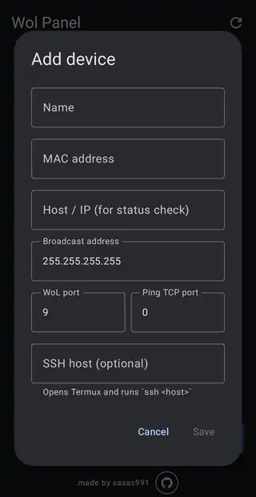

Wol Panel
أدوات النظام
Wol Panel is a small, no-frills Wake-on-LAN client. Keep a list of the machines on your network and wake any of them with one tap. Features: * Device list saved across restarts, no account and no cloud * Wake button sends a Wake-on-LAN magic packet to the device's broadcast address * Live online/off
✓ ترخيص مفتوح (GPL-3.0-or-later) · آخر تحديث: 2026-10-05
1.3الإصدار
1.3 MBالحجم
GPL-3.0-or-laterالرخصة
Open in Kanzتحميل APK (1.3 MB)
Download APK
SHA-256: 8a5eb38eb3364dcc65462c05f55bb242fb1c864bed9888cfd08c9f1e8c8e1850

امسح الكود لفتح صفحة التطبيق
Scan to open this app page
لو كنز مش متثبت عندك: نزّل متجر كنز.
Not installed? Get the Kanz store.